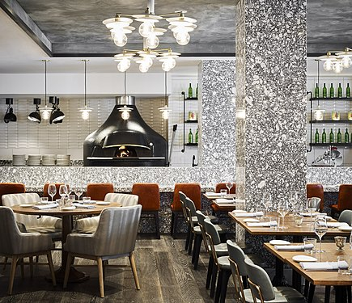

History
Since its foundation in 2007, Souper Douper has been a mainstay favorite for American and Canadian casual dining.
Bridging the gap between upscale hotel dining rooms and at-home family dinner tables, Souper Douper has won over the hearts
of diners of all ages in nearly all 50 states. Conceived by Preston and Britt Derby, the pair realized while traveling
that there were no accessible and affordable dining locations where soups of all backgrounds could be found
being served. Souper Douper prides itself on a consistent menu of favorite soups from all over the world alongside
local favorites shown off by regional chefs at each location. With offerings for both take-out and dine-in experience,
customers can enjoy a piping hot bowl of soup on the go or in our comfortable and beautiful dining spaces.
With a constantly rotating menu, enjoy entirely made-from-scratch award winning soups such as our Chicken Noodle,
Clam Chowder, Tomato Basil, Tom Kha, Vietnamese Pho, and African Peanut. We even offer numerous
gluten-free and allergen conscientious options. Please feel free to ask your server for any info on ingredients, and
they will be happy to provide you with complete and concise lists. Alongside soups, sandwiches and other American
dining classics are served as well as our signature bread-rolls and salad with every meal. Whether grabbing something
warm on the go or looking for somewhere fun for the entire family, Souper Douper is sure to scratch that fiendish
urge for a good 'ol bowl of soup.

COVID-19 Policies
Here at Souper Douper, we are committed to genuine hospitality and taking great care of our people so they can take great care of you.
The health and well-being of our staff members and guests is our top priority, and we
have this as our guiding principle. We are taking
all the precautions the CDC recommends to make sure that our guests are as safe and comfortable as possible.
In addition to all safety procedures currently in place for our take-out and delivery service,
we have implemented the following:
- Reconfiguring seating in the dining room, patio and bar to meet social distancing guidelines
- Using floor decals to remind guests in our lobby and bakery areas to keep to social distancing protocols
- Having dedicated staff through every meal period solely responsible to sanitize all high contact areas
- Continuing wellness checks of all staff members before each shift, including temperature checks with a thermometer
- Providing all staff and managers in our dining rooms and kitchens with personal protective equipment, including masks and gloves
- Reinforcing staff hand-washing routinely and frequently
- Limited outdoor seating (Please make a reservation here)
- Hand sanitizer available in our lobbies and restrooms for guests
- Using text paging to allow guests to wait outside of the restaurant
- Not presetting any tables
- Providing takeout containers for guests who prefer to wrap their own leftovers
- Allowing for contactless mobile payment at the table with the guest’s personal device
- Sanitizing pens after guest use
Your safety is of the utmost importance to us, so we also are also offering delivery and takeout. Call at (509)-123-456
OR ORDER NOW for no-contact delivery.